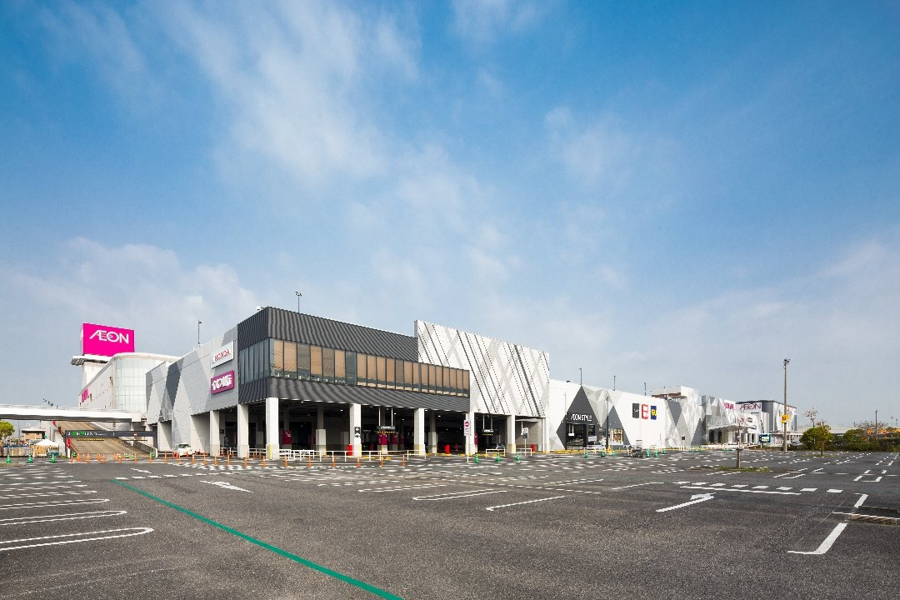
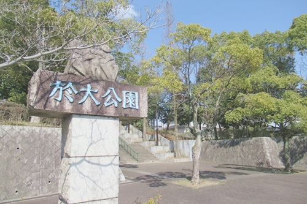
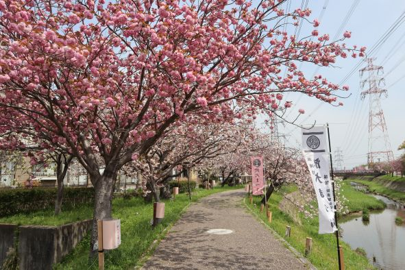

東浦町について
東浦町には、自然を楽しめる公園や、 ショッピングを楽しめる施設、 歴史や文化に触れられるイベントがあります。
観光スポットマップ
おすすめスポット
イオンモール東浦

イオンモール東浦
東浦町にある大型ショッピングモールです。 ファッション、グルメ、ショッピングなど、 様々な楽しみ方ができます。
於大公園

於大公園
東浦町にある自然豊かな公園です。 遊具広場やバーベキュー広場、 おもしろサイクル広場などがあります。
於大まつり

於大まつり
東浦町の春を代表するイベントです。 於大行列やステージイベント、 物産展などが行われます。
於大まつりの見どころ
於大まつりでは、於大姫や侍女、 武者たちが於大のみちを歩く 「於大行列」が行われます。
歴史的な衣装を身につけた人々による 華やかな行列を見ることができます。